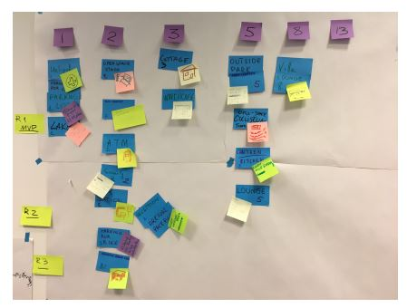

These exercises allow you to participate in a SCRUM.
After completing this assignment you will be able to:
The goal of this assignment is to participate in an exercise to develop a plan for a Smart Gigabit Community using SCRUM planning. You are expected to devlop a working knowledge of this material from Chapter 9 of the book and earlier chapters. If you are having trouble there are several resources available, besides a Google Search.
Review the Lynda.com video: Scrum: The Basics (1h2m)
Time: 3 minutes
Envision the creation of a high technology Smart Gigabit Community in the southeast Minnesota region. The goals of this project are:
Definitions:
Focus on the first sprint.
(50) 1. Which one project goal is of most interest to you?
(50) 2. Which project goal do you feel is the most difficult to achieve?
(50) 3. Is this the first time that you have participated in a SCRUM activity?
Time: 5 minutes
You have been assigned to a group in D2L.
Log into D2L, under Communications>Groups you will find your Group, and group members.
Meet with and introduce yourself to your group members.
(50) 4. Does your team have different backgrounds and view points on this project?
Begin by making a list of who will be the users of this product, the Smart Gigabit Community.
Write the names of your users on large Post-It notes. These will become the top layer of the story map.
(50) 5. Generate a list of three or more users, in order of importance.
Time: 15 minutes
Discuss with your team which user should be satisfied first. (50) 6. Make a list of things that your most important user will need. It may help to imagine a day in the life of this user, as a way to generate their needs and wants. These will be the second level of the story map.
Do this for at least three of your users.
Time: 7 minutes
Each team brainstorms and develops ideas or features that will address these user needs.
Write these features on Post-It notes. They are the third tier of the story map. Place them on the board.
(50) 7. Write below some of the most important features for one of the users.
Time: 20 minutes
Working with the Facilitator and all teams, focus on the list of features and develop of list of those that will add the most value for the least effort.
Using blue duct tape, place three long lanes on the story map to create three separate releases.
One way to classify the relesases is as follows (feel free to modify)
Activity: all team members are invited to go to the story board and move the features as they feel would be best.
(50) 8. List the features in Release 1.
Time: 2 minutes
Two members of each team will go to the story board, and take each features' Post-It note and place it in one of the columns (1, 2, 3, 5, 9, 13, 20). These columns represent the relative effort required to complete that feature. All participants are not to talk during this time. Participants are allowed to move any Post-It as they see fit.
The other team members need to observe and make sure that they agree with the classifications.
(50) 9. What did the observing team members notice about this sorting process?
Time: 18 minutes
Each team takes an item(Post-It note) from the backlog board, brings it to their table, clarifies open questions, and writes these details on the card. Then the item is placed back on the board, and takes another item and repeats the process. Note that just because a team adds details to an item does not mean that that team will later be working on that item.
This process continues until details are added to all the items or 20 minutes passes.
Be sure to take a picture of the backlog matrix
(50) 10. What did the observing team members notice about this sorting process?
 Prioritized Product Backlog
(50) 11. What suggestion do you have to improve this prioritzation process? This is the end of the Product Definition Process. Prepare next to build the product!
Use a web browser to verify that you have published your website to https://classes.winona.edu/... Check that your name, StarID, email, class, semester, section and all of your answers are correct and visible. From the menu choose File>Print... and using "Microsoft Print to PDF" save a copy of this assignment as a .pdf file in your ' ' folder.
Save your file 'SummativeL4S1.pdf' to the ' ' folder.
(100) 12. Upload your file 'SummativeL4S1.pdf' to the D2L 'SummativeL4S1' Assignment folder.
Use a browser to view your completed and published website at: https://classes.winona.edu/... Ensure that you have linked this assignment on your home page. Note that your screen shots do not have to be completed to perform this step.